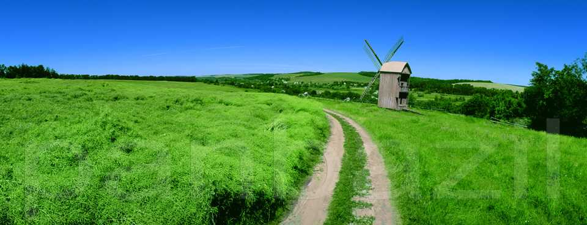

| Головна | Україна — моя Батьківщина | Моя країна-найкраща у світі |
Моя Україна
Я народився в Україні, і мені безмежно дорога ця земля. Це і Тарасова гора під Каневом, це край дивовижної природи, край, де колись панували славетні козаки: сильні, мужні, красиві люди, а головне — вільні!
Багатство України — це золоті пшеничні лани. Ось чому на нашому прапорі є жовтий колір, який і символізує безмежні лани пшениці. Другий колір на прапорі — блакитний — це чисте небо України.
Любити свою Батьківщину — це значить не тільки пишатися її славною історією, але прагнути своїми діями ще вище піднести її велич, повсякчас дбати про втілення в життя світлих ідеалів.
Україна має багато талановитих синів і дочок, які віддають усі свої знання, уміння, щедрість сердець рідній неньці. Кому зараз не відоме ім’я Великого Кобзаря — Тараса Шевченка, який вірив у те, що «оживе добра слава, слава України»? Хто не знає видатного Каменяра — Івана Франка, або українську дочку Прометея — Лесю Українку?! Виринають з небуття нові й нові імена, імена тих, хто любив рідну землю, хто вірив у неї й боровся за її щастя: Пантелеймона Куліша, Василя Симоненка, Василя Стуса і ще багатьох і багатьох.
Ми вже досить дорослі, аби замислюватися про своє майбутнє, своє і своєї Батьківщини. Я прагну стати корисним для свого народу, вирости громадянином з активною життєвою позицією, хочу впевнено орієнтуватися в проблемах сучасності, бачити перспективи розв’язання цих проблем. Для цього насамперед треба вчитися, любити свою державу, щоб обрана професія принесла якнайбільше користі.